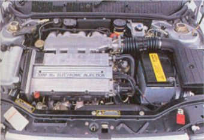
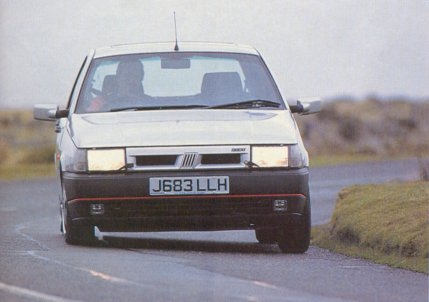
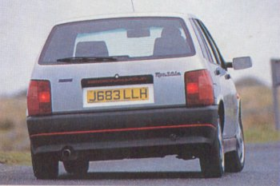
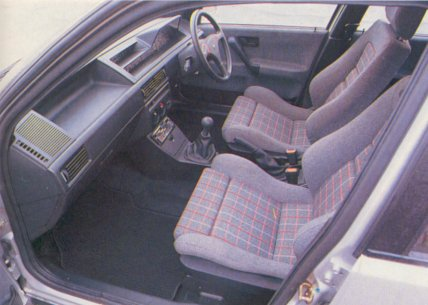
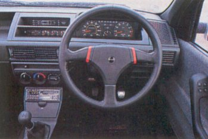
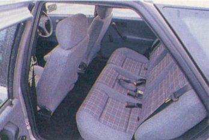
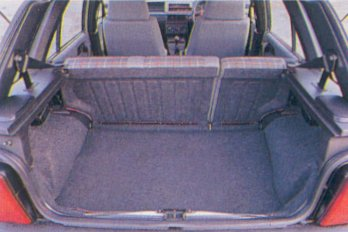
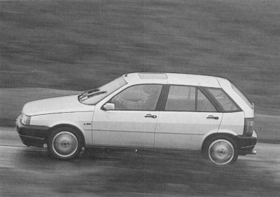

FAST
BREED
REACTIONS
| Motorfair |
| STAR TEST |
| Escort RS2000 versus Vauxhall Astra Gsi versus Fiat Tipo 16V versus Honda Civic VTi |
The 1991 RS2000, however, is part of that world and will need more than nostalgia to re-establish its famous name among the new generation of 150bhp hot hatches beginning to filter into the showrooms.
Early impressions suggest that it’s got what it takes. As the first real driver’s car in the new Escort range, it shows more promise than any new Ford since the Sierra Cosworth, if a long time coming.
It’s been a longer wait still for the hot version of the Fiat Tipo, but, after innumerable cancellations, the promised Sedicivalvole will be on sale from 2 January, three years after the first Tipo arrived in Britain.
Vauxhall fully understands how the presence of a potent sporting model to spearhead its range can generate sales for the volume-sellers further down the scale, so, conversely, it has contrived to launch the two-litre 16-valve Astra at the same time as most other models in the new Astra line-up. This time around, though, the sporting Astra loses the GTE name in favour of GSi.
Both the Astra GSi and the Ford RS2000 are fully paid-up members of the 150bhp club and, as everyone must be aware, the big sales battle is between these two. The Fiat Tipo 16v, also a twin-cam normally aspirated two-litre four, just scrapes into this elite line-up with 148bhp.
But there’s one other high-spirited newcomer, on sale from 22 November, which must also be considered alongside this company: the new Honda Civic VTi. A full 2ins longer than the RS2000, this bigger and beefier Civic punches out a frenetic 158bhp from its free-spinning VTEC engine of just 1.6-litres, and a price of around £14,500 gives it a significant edge when compared with the £15,600 asked for the Vauxhall Astra GSi or £15,995 for the Ford. Fiat’s Tipo, the only one of the bunch with five-doors, appears to offer the best value at £13,949, but anti-lock brakes, standard fit on the others, is only available at an extra £948. Catalytic converters are standard on all four.
Place these four 130mph hot hatches together and it’s obvious that two are overtly sporting, the remaining pair somewhat more restrained. Either tactic could win or lose sales, especially in view of the unwanted attention lately bestowed on this type of car from the criminal elements as well as insurance companies keen to make extra bucks out of the present situation.
The aggressively styled Astra GSi grabs the attention with both hands, but it’s reassuring to know that it carries some defences against theft in the form of its door dead-locks and standard anti-theft alarm. Just as sporty, but better proportioned and prettier, the Honda Civic offers no such crime deterrents.
If the RS2000 has a problem, it’s merely that the changes to separate it from
the remainder of the Escort pack are so subtle as to go almost unnoticed.
Restraint is favoured by the otherwise arresting Tipo 16v, too. Without careful
examination it’s really only the 15ins alloy wheels that set these high-power
versions apart from the lesser models in the range.
PERFORMANCE AND ECONOMY
Ever since the original Astra GTE 16v stormed the hot hatch scene with its immensely torquey engine, this has been the normally aspirated engine to beat in its class. Only a few have come close. With forged pistons, a classic twin-cam head design with four valves per cylinder and a technically advanced electronically injected sequential fuelling system linked with digital ignition, it represents the state of the art in production engine design. It looks the part too, with nicely finished silver and red cam covers.
Three years on, the same engine powers the GSi, although fitting a catalytic converter has seen the power drop from 156 to 150bhp at 6000rpm and the torque drop by a similar margin to 145lb ft.
These are impressive figures nonetheless, so perhaps it’s no surprise that a remarkably similar design of cylinder head has been chosen by Ford to sit atop the I4-series engine (as seen in the Sierra and Granada in eight-valve form) to power the RS2000. Its cam covers even share the same silver and red colour scheme.
Ford’s EEC-1V management system takes care of the sparks and fuel metering for the multi-point injection to create an engine to equal the Vauxhall’s power, but the torque can’t quite match the Vauxhall’s at 140lb ft.
|
 |
| Tipo 16v: 148 bhp, quiet, but quick. |
For all their high specific power, these three engines were developed as much for strong mid-range lugging ability as for top-end zap. Each can claim that around 90 per cent of peak torque is available from as low as 2500rpm. There are no such compromises for the Civic VTi’s beautifully-engineered and technically advanced four. This engine is what race mechanics refer to as a ‘screamer’. It thrives on revs, and that’s confirmed by the power peak of 7500rpm and the torque peak just 500rpm less.
Combining the same basic multi-valve format as the other engines here, but with the notable addition of electro-hydraulic three-stage variable valve timing, Honda extracts 158bhp and 111lb ft from a mere 1595cc. That places it right at the pinnacle of four-cylinder production engine development, and the resulting specific power output of 99bhp per litre is the highest of any volume-produced naturally aspirated car engine.
For all the high-revving histrionics of the Honda, Vauxhall’s two-litre four still takes some beating. On the road, it’s always the Astra that proves hardest to catch in any power struggle, and such is the depth and accessibility of the power that being in precisely the right gear all of the time is not essential. This lugging ability, complemented by a continuing vitality at the top end of the rev band, would make for an engine still very much in the running as the best of its type were it not for the over-loud gruffness that so dominates hard use.
Ford’s offering could almost be a carbon copy of the Astra’s engine, but with a less offensive note low down, less top-end verve and an annoyingly loud drone should the full extent of the rev band be exploited. That said, kept below 6000rpm it is an excellent engine, every bit as good as the Vauxhall’s for lowdown torque but less vocal. It just gets on with the job.
In such company, the Tipo might well be expected to reveal some shortcomings. Not so, at least not anywhere but at the test track. Its strength lies in a responsive and gutsy mid-range, easily exploited and a delight to listen to. It’s the quietest powerplant of the quartet and, on the road, the Tipo feels almost as quick as the Ford and Astra, except at the top end, where the Fiat engine begins to run out of steam just a little too early.
That’s at about 5000rpm, which is where the Honda VTEG engine is just beginning to build up a head of steam. This engine is nothing short of amazing. Despite the figures, initial acquaintance leads you to believe that it’s really quite gutless compared with its two-litre rivals. But when 5000rpm shows on the dial, the little VTEC somehow finds its vigour multiplied. From here through to well beyond 8000rpm, where an upchange magically brings you back to the start of it all again, there’s as much power as you could wish for in a hot hatch, and it’s accompanied by the most delightfully encouraging howl this side of an NSX. Without doubt, it’s the smoothest and sweetest engine here, but it does require constant stirring of the ultra-slick gearshift if it is to be fully exploited.
In real road situations there’s only marginal differences in straight-line speed between the four. The biggest difference is that the Honda demands more from the driver because the correct gear is essential if instant power is wanted. For refinement and the appeal of the sounds of their engines -- noise quality -- the Fiat and the Honda emerge in front.
Check out the test track times and two distinct patterns emerge. From a standing start the Astra and Civic are quickest. To 60mph the Astra records 7.2secs, the Civic just a tenth behind, while the Ford and Fiat trail by a full second. By 100mph the Civic is still up with the Astra, just two tenths behind, but the others have fallen back by a further second. The Civic turns the tables on the Astra to record the best 30-70mph time of 7.0secs, the Astra at 7.2secs and the Tipo and RS2000 a little way behind in the high sevens. All are respectably quick, and each can attain 130mph on the flat.
A thorough analysis of the in-gear times makes it no easier to draw any meaningful conclusions other than to note that the Ford and Vauxhall come out slightly ahead more often than the Fiat and Honda. The RS2000 is aided by lower gear ratios than the Astra’s, and this gives it a slight bonus in some increments, but there’s no substantial difference other than at the top end, where the Vauxhall benefits from more bite. The Tipo loses out slightly, but the differences are measured in fractions rather than full seconds, and the Honda pulls out a surprise in proving far stronger than it feels at the low end of the engine’s power band. In top, for example, it’s beaten only by the RS2000 in the 50-70mph increment.
Differences in fuel economy are small too. All are equipped with a catalytic converter, so unleaded is the required diet, and all cracked 25mpg on our hard-driven group test route. Fiat’s Tipo came out worst with 25mpg dead, the smaller capacity but higher powered Civic was best with 26.9, and the RS 2000 and the Astra GSi slugged it out with 25.9 and 26.4mpg respectively. Differences in tank sizes mean that the Honda and Fiat will be first for a refill.
In the final analysis, all of these possess charismatic engines well suited to
the task of sports driving. The Astra remains the best in its power characteristics,
the RS2000 only marginally behind, but both of these lose out on refinement and
noise quality to the thoroughly enjoyable Tipo 16v unit. For day-to-day driving,
its engine is arguably the best of the lot. The effervescent little Honda engine
can produce as much pleasure as any here if you are in the mood for it, but the
Honda is not a car for lazy drivers.
HANDLING AND RIDE
|
 |
| Fiat offers fluent and secure-feeling handling, with consistent driver feedback. |
In response to an inability to tame satisfactorily the effects of 145lb ft of torque, Vauxhall has resorted to electronic traction control (ETC) to bring matters in hand.
It’s only a partially successful solution. No one is casting doubt on Vauxhall’s ETC in its ability to deal with the onset of torque-induced wheelspin, but it lacks subtlety, often cutting the power for far longer than is necessary before allowing the driver to regain the use of his right foot.
And, of course, it doesn’t actually tackle the root of the problem. There remains an awkwardness about the steering as it tugs at your grip under power and demands constant corrections over bumpy surfaces and when crossing road markings. This feeling of always having to work at the steering is perhaps amplified by the fairly large-diameter rim and too-low gearing for the otherwise well weighted steering, and the corruption of feedback that the system causes places a heavy burden on the Astra’s ability to produce genuine driving pleasure.
The Ford RS2000 manages to avoid these pitfalls with its lighter and more direct steering, backed up by a flat cornering stance and sharp turn-in. It’s a world apart from lesser models in the Escort range, but ultimate fluency through a series of bends is masked by a distinct lack of feedback, and there remains a tendency to spin an inside front wheel on the tighter corners, which further deadens the steering.
It’s left to Fiat and Honda, admittedly both with less torque on offer, to demonstrate how to cope effectively with transmitting power to the ground without dramatics. While the Civic displays fine manners with direct and accurate steering responses, it’s the Tipo which impresses most, and it’s the only one here with any true fluidity. That said, it offers little in the way of throttle adjustability, and charging too hard into a corner occasionally meets with the sudden onset of understeer. But most of the time it grips well and handles securely and confidently, with the most fluent driver feedback of the four and the most fluid line through a complex of bends.
The Astra, partially tamed by ETC, has only limited appeal with its nose-led character, although it’s certainly quick -- fat tyres and decent grip see to that -- and roll is kept to negligible proportions. A better balance is achieved by both the RS2000 and the Civic.
These exploit the rear tyres as well as the fronts to produce nimble characteristics, but although the Honda possesses a degree of predictable throttle adjustability that can be exploited by the skilled driver, with the Ford there’s less certainty about which end has the least grip at any one time, leading to ragged on-limit behaviour and a sapping of driver confidence. But you’d only find this out on the test track; at road speeds the RS is capable, grippy and satisfying to drive.
In the wet, the Civic’s Dunlops struggle unsuccessfully to maintain the same grip as the others, and when pushed hard over undulating moorland roads its suspension -- supple and effective elsewhere -- fails to maintain an iron grip on wheel and body control. The Astra, its hard, uncompromising suspension asked to work overtime in these tough conditions, skips and skates over the bumps, and it too loses marks here. Ford’s RS2000 copes much better, and is more than up to the task, but the best controlled suspension belongs to the Tipo 16v. It possesses the best ride quality of the lot, though none of these cars achieves a truly inspiring blend of ride and handling.
|
 |
| Best ride quality of the four for Tipo. |
All the test cars came equipped with anti-lock brakes, standard-fit on all bar the Tipo. While the Fiat’s and Honda’s brakes always felt positive and firm, the Astra suffers from a slightly mushy pedal and our test RS2000’s brakes remained soggy and lifeless throughout. A faulty anti-lock braking system, which periodically refused to work, probably contributed to this.
With its new gearbox and pleasingly close ratios, cog-swapping is no hardship
with the Ford’s light and pleasant shift action. It’s almost up to the
Honda’s finely engineered standard, but there’s credit here for the Astra
too. Its gearchange is much improved in the GSi. The Tipo, too, has the best
gearchange of any Fiat we’ve tried recently. Although the slightly rubbery
action and heavy clutch aren’t quite in the same league as the others,
it changes cleanly and positively, and it’s as quick as the driver.
Close ratios characterise all four ‘boxes.
AT THE WHEEL
|
 |
| The Fiat's front seats are excellent, even better than the Recaros in the RS2000. |
The notion that driver comfort takes second place in a sporting car is refuted once and for all by the new breed of hot hatches. For the most part, Vauxhall has more or less got it right with the Astra GSi. A decent driving position, supportive and well-trimmed seats, plenty of footspace, a good-to-hold leatherrim wheel and large, easy to read instruments all contribute to a cabin that’s easy to live with, if a touch sombre with its predominantly grey trim. There’s plenty of oddments space, and, as with the other cars here, it comes equipped with central locking, electric windows and mirrors, and power steering. The Astra is set apart from the others, however, by its trip computer, which shares an LCD display with the radio. Along with security-etched glass, it’s another useful anti-theft measure from Vauxhall.
There’s nothing much wrong with the RS2000’s cabin, yet somehow it doesn’t square with the price tag. The plastic wheel, the drab velour for the Recaro seats, the cheap-looking plastic components for the centre console; all spell low rent rather than hot hatch. But there’s nothing wrong with the basic positioning of controls, and the range of adjustment for the seat and telescopic wheel adjustment is excellent.
|
 |
| Tipo's facia is unusually high. |
The Civic VTi appears lower and leaner than the others, but it also feels cheaper. The doors close with a tinny clang, the trim material looks like nylon and feels generally nasty, the rear seats don’t appear to fit properly, and the designers have left nowhere for oddments other than a slim door pocket, barely wide enough to take a map. But the view from the sculpted driver’s seat looks good with the contoured facia and businesslike instruments, and the leather three-spoke wheel feels just right.
Visibility isn’t a problem with any of these, but the Tipo’s
facia is fairly high for shorter drivers, and its rear window gets obscured
with spray at the first hint of a shower. Its ventilation system can’t
match that of the others either, with a heater that’s sluggish to throw out
any warmth.
COMFORT AND SPACE
|
 |
| Tipo's a full five-seater with bench seat. |
All have split/folding rear seats, but although the Civic has a luggage cabinet below the boot floor there’s no cover for the main luggage area. It also has a split rear tailgate, though we’re not quite sure where the advantage, if any, lies. For luggage capacity, there’s little to choose between the Astra, the RS2000 and the Tipo. All have good sized boots, much larger than the Civic’s.
|
 |
| Five-doors make the Tipo practical. |
FINISH AND EQUIPMENT
Vauxhall has acquired a fair reputation for build quality, but although our test car appeared to be solidly built and well finished it suffered from too many interior shakes, the central locking sometimes worked of its own volition, the gear lever gaiter came loose, and the battery went flat.
There were no such troubles for the RS2000. It didn’t look quite
as well finished as the Astra, but nothing broke or fell apart, which
makes the dreary styling and even duller interior even more of a shame.
The Honda’s shiny paint and accurate panel fit impressed, as did the engine,
almost a work of art in itself, but this is only met with a disappointingly cheap
interior. Fiat has improved its build quality hugely recently, and the Tipo
16v seems almost up to Ford standards other than in the generous gaps between
panels.
VERDICT
There is no clear-cut victor here, at least none fully deserving of the title. Each of these cars is good, often very good in specific areas but flawed in others.
The most significantly flawed is the Vauxhall Astra GSi. Even that wonderfully responsive and gutsy engine and the well-designed interior can’t mask shortcomings in the ride refinement, the overall noise level or, most serious of all, the wayward steering. A shame, because it’s a car that has the look of a real winner about it, and if only some of Lotus’s chassis technology were applied in the right places it could be the best of the bunch.
For sheer fun and zest, the Civic VTi, with its inspirational engine, is hard to beat, and its handling isn’t far short of brilliant on smooth roads. But the shabby interior, the too-lively suspension and the need for constant gearchanges lessens its appeal when the fun has to stop, and its wet-road grip doesn’t match that of its rivals. Priced less than the others, it’s a tempting buy nonetheless, and falls short of the overall talent of the Ford RS2000 and the Fiat Tipo 16v by only a tiny margin. Third overall.
|
 |
| Tipo Wins: punch, poise and fluency combined with practicality and keen pricing. |
Not that the winner here, Fiat’s Tipo 16v, is likely to set any pulses
racing on looks alone. But its strengths run deep. The engine is punchy
and refined, the chassis possesses poise and fluency; it’s a car with
pace and space. But if likely depreciation costs were flung into the
equation too, then the Tipo might not look quite so attractive.
In the final analysis, we can only conclude that this is a class still
awaiting a winner fully deserving of the title.
|
HOW THEY COMPARE |
||||||||
|
MAKE AND MODEL |
Ford Escort RS2000 16v |
Vauxhall Astra GSi |
Fiat Tipo 2.0 16v |
Honda Civic 1.6 VTi |
||||
|
ENGINE |
||||||||
|
Location |
Front, front-wheel drive |
Front, front-wheel drive |
Front, front-wheel drive |
Front, front-wheel drive |
||||
|
Configuration |
4 cyls in line |
4 cyls in line |
4 cyls in line |
4 cyls in line |
||||
|
Capacity (cc) |
1998cc |
1998cc |
1995cc |
1595cc |
||||
|
Bore/Stroke, mm |
86/86 |
86/86 |
84/90 |
81/77 |
||||
|
Compression ratio |
10.3:1 |
10.5:1 |
10.5:1 |
10.2:1 |
||||
|
Head/block |
al. alloy/cast iron |
al. alloy/cast iron |
al. alloy/cast Iron |
al. alloy/cast iron |
||||
|
Valve gear |
dohc, 4 valves per cylinder |
dohc, 4 valves per cylinder |
dohc, 4 valves per cylinder |
dohc, 4 valves per cylinder |
||||
|
Ignition and fuelling |
Electronic ignition |
Electronic ignition |
Electronic ignition |
Electronic ignition |
||||
|
Max power |
150bhp at 6000rpm |
150bhp at 6000rpm |
148bhp at 6250rpm |
158bhp at 7500rpm |
||||
|
Max torque |
1401b ft at 4500rpm |
145lb ft at 4800rpm |
131lb ft at 5000rpm |
111lb ft at 7000rpm |
||||
|
TRANSMISSION |
||||||||
|
5-speed manual |
5-speed manual |
5-speed manual |
5-speed manual |
|||||
|
Gear ratio/mph per 1000rpm |
||||||||
|
Top |
0.85/20.2 |
0.89/21.9 |
0.94/19.8 |
0.875/18.0 |
||||
|
4th |
1.11/15.5 |
1.13/17.3 |
1.16/16.1 |
1.107/14.2 |
||||
|
3rd |
1.48/11.6 |
1.48/13.2 |
1.54/12.1 |
1.458/10.8 |
||||
|
2nd |
2.13/8.1 |
2.16/9.0 |
2.27/8.2 |
2.105/7.5 |
||||
|
1st |
3.23/5.3 |
3.55/5.5 |
3.55/5.3 |
3.230/4.9 |
||||
|
Final drive |
3.82:1 |
3.42:1 |
3.56:1 |
4.266:1 |
||||
|
SUSPENSION |
||||||||
|
Front |
MacPherson struts, |
MacPherson struts, |
MacPherson struts, |
Double unequal length wishbones, |
||||
|
Rear |
Torsion beam axle, |
Torsion beam axle, |
MacPherson struts, |
Double unequal length wishbones |
||||
|
STEERING |
Power assisted rack and pinion |
Power assisted rack and pinion |
Power assisted rack and pinion |
Power assisted rack and pinion |
||||
|
Turns lock to lock |
2.9 |
3.4 |
3.1 |
3.0 |
||||
|
BRAKES |
||||||||
|
Front |
Ventilated discs |
Ventilated discs |
Ventilated discs |
Ventilated discs |
||||
|
Rear |
plain discs |
plain discs |
plain discs |
plain discs |
||||
|
Anti-lock |
Standard |
Standard |
£948 option |
Standard |
||||
|
WHEELS AND TYRES |
||||||||
|
Rim type, width |
Cast alloy, 6ins |
Cast alloy, 6ins |
Cast alloy, 6ins |
Cast alloy, 6ins |
||||
|
Tyres |
195/50 VR 15 Michelin MXV |
205/50 Pirelli P700-Z |
185/55 VR 15 Pirelli P600 |
195/55 VR 15 Dunlop D87 |
||||
|
COSTS |
||||||||
|
Total (in UK) |
£15,995 |
£15,600 |
£13,949 |
approx £14,495 |
||||
|
PERFORMANCE |
||||||||
|
Maximum speeds (mph/rpm) |
||||||||
|
Top (Mean) |
131/6485 |
130/5936 |
128/6465 |
132/7330 |
||||
|
4th |
101/6500 |
117/6800 |
106/6600 |
114/8000 |
||||
|
3rd |
75/6500 |
90/6800 |
80/6600 |
86/8000 |
||||
|
2nd |
53/6500 |
61/6800 |
54/6600 |
60/8000 |
||||
|
1st |
34/6500 |
37/6800 |
35/6600 |
39/8000 |
||||
|
ACCELERATION FROM REST |
||||||||
|
(Time, secs/speedo mph) |
||||||||
|
True mph |
||||||||
|
0-30 |
2.8/32 |
2.9/30 |
2.9/3 1 |
2.8/3 1 |
||||
|
0-40 |
4.4/43 |
4.2/41 |
4.3/41 |
4.0/41 |
||||
|
0-50 |
6.0/54 |
5.5/52 |
5.9/50 |
5.4/52 |
||||
|
0-60 |
8.3/65 |
7.2/62 |
8.2/60 |
7.3/63 |
||||
|
0-70 |
10.7/75 |
10.1/73 |
10.7/70 |
9.8/74 |
||||
|
0-80 |
13.7/85 |
12.6/84 |
13.6/80 |
12.3/85 |
||||
|
0-90 |
17.4/95 |
16.5/95 |
17.6/91 |
16.2/95 |
||||
|
0-100 |
22.2/106 |
20.6/105 |
22.6/101 |
20.8/105 |
||||
|
0-110 |
29.7/117 |
26.3/114 |
30.2/111 |
26.2/116 |
||||
|
Standing qtr mile (secs mph) |
16.4/87 |
15.9/89 |
16.3/87 |
15.8/89 |
||||
|
Standing km (secs mph) |
29.7/110 |
29.0/112 |
29.7/110 |
28.8/113 |
||||
|
30-70 thro gears (secs) |
7.8 |
7.2 |
7.8 |
7.0 |
||||
|
ACCELERATION IN TOP |
||||||||
|
mph |
||||||||
|
2040 |
10.1 |
10.8 |
10.6 |
10.3 |
||||
|
30-50 |
9.5 |
10.6 |
9.9 |
9.9 |
||||
|
40-60 |
9.3 |
9.9 |
9.7 |
9.7 |
||||
|
50-70 |
9.3 |
9.9 |
10.4 |
9.8 |
||||
|
60-80 |
10.2 |
10.1 |
11.0 |
11.6 |
||||
|
70-90 |
11.0 |
10.6 |
11.1 |
13.7 |
||||
|
80-100 |
11.9 |
11.4 |
12.2 |
15.5 |
||||
|
90-110 |
13.7 |
12.6 |
13.4 |
20.2 |
||||
|
100-120 |
19.0 |
18.2 |
- |
- |
||||
|
ACCELERATION IN 4th/3rd |
||||||||
|
mph |
||||||||
|
2040 |
6.9/4.8 |
7.4/5.3 |
7.9/5.3 |
7.2/5.0 |
||||
|
30-50 |
6.4/4.5 |
7.1/4.8 |
7.3/5.0 |
6.7/4.9 |
||||
|
40-60 |
6.4/4.5 |
6.7/4.5 |
7.5/4.8 |
6.9/5.2 |
||||
|
50-70 |
6.5/4.6 |
6.5/4.4 |
7.4/4.8 |
7.6/5.1 |
||||
|
60-80 |
6.7/- |
6.5/4.9 |
7.2/5.4 |
8.0/5.0 |
||||
|
70-90 |
7.2/- |
6.9/- |
7.8/- |
8.4/- |
||||
|
80-100 |
8.4/- |
7.9/- |
9.1/- |
8.9/- |
||||
|
90-110 |
-/- |
10.1/- |
-/- |
9.8/- |
||||
|
FUEL CONSUMPTION |
||||||||
|
Overall mpg |
25.9 |
26.4 |
25.0 |
26.9 |
||||
|
Touring mpg |
30.8 |
34.1 |
28.3 |
35.8 |
||||